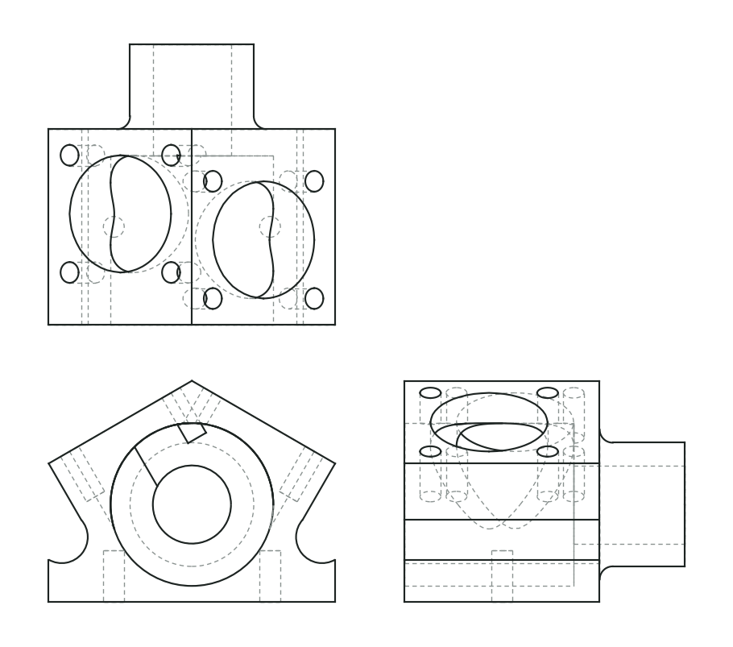
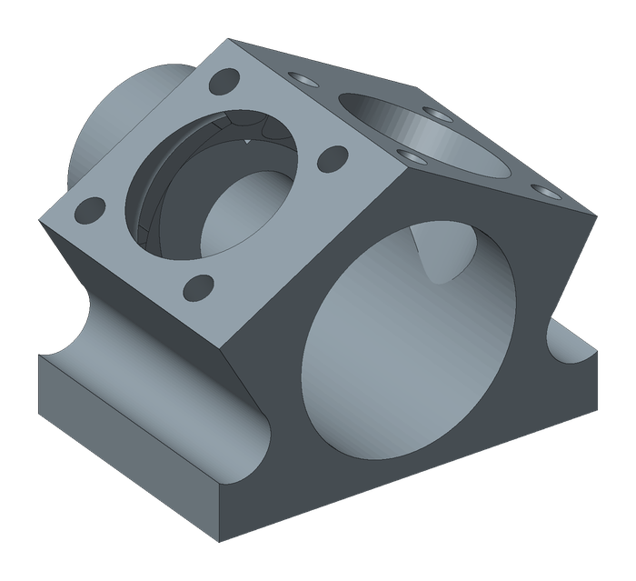
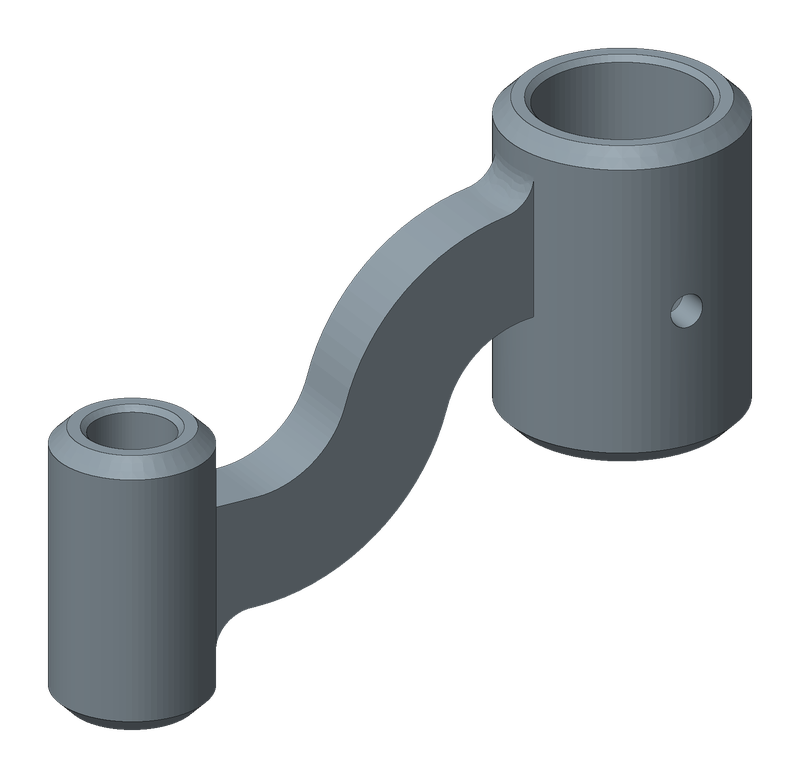
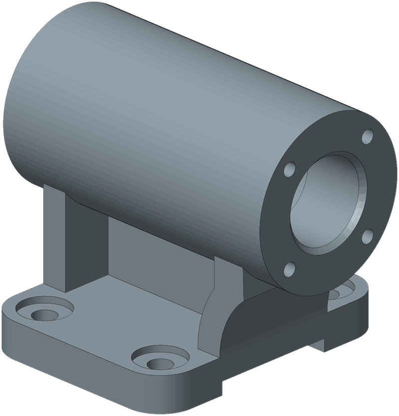

开源 Agent Skill · MIT
自动读取你的工程图，
然后在 SolidWorks 里建模。
支持 DWG、DXF、PDF 和图片。AI 读图，脚本建模；每个特征都记着依据的是哪个尺寸，建完会和答案核对。
- DWG
- DXF
- 图片
- STEP
- SLDPRT

三视图（由模型投影）
SOLIDWORKS01
只有一步交给 AI
让 AI 一口气从图纸生成 CAD 代码，错了也不知道错在哪。Drawing2SW 把过程拆开，每个交接点都有文件可以检查。
- A
提取证据
读取 DWG/DXF 的原生尺寸实体、PDF 的文字坐标；图片自动切视图，可选 OCR。绑定原图哈希。
observations.json - B
AI 读图
确认单位和投影法，关联视图，判断每个尺寸属于哪个特征。看不清或缺尺寸就提问，不猜。
part.json - C
校验
JSON Schema、证据引用、工程规则逐项检查。切点、交点由几何库计算，AI 只写图上标的数。
validate_feature_table.py - D
预览与复核
CadQuery 生成 STEP，投影成四向线框，和原图叠在一起看孔位和方向。
preview.step - E
SolidWorks 建模
通过 COM 逐个特征建模，每一步都和 CadQuery 对比体积和位置，出错能定位到特征。
part.SLDPRT
"id": "holes",
"type": "hole",
"plane": "front",
"diameter": 6.0,
"positions": [[16.0, 12.5], [56.0, 32.5]],
"depth": "through_all",
"meta": {
"confidence": 0.95,
"evidence": "Both table rows give X,Y and diameter...",
"evidence_refs": ["p1-text-11", "p1-text-12", …]
}每个特征都说得出来源
evidence_refs 指向证据文件里的具体标注，证据文件又绑定了原图的 SHA-256。换了图纸、改了文件，校验会直接报错。
特征表与 CAD 无关。同一张表可以生成 STEP，也可以驱动 SolidWorks，两边结果互相核对。
02
能做什么零件
三个都是公开练习图按图建模的结果（盲读，没有答案模型，靠投影和原图对照），第三个是国标教材图。都在 SolidWorks 里逐个特征自检通过。


回转件
轴、法兰、套筒、盘类；任意轴旋转加料或切除
棱柱件
板、支架、底座；拉伸、切除、直线加圆弧轮廓、相切圆弧圈
孔
光孔、螺纹底孔、沉孔、埋头孔、钻尖、分布圆
细节
倒角、圆角、任意斜面、切到曲面为止、线性阵列、镜像、渐开线直齿
图纸设定
mm / inch、第一角 / 第三角投影、比例、双单位
暂不支持
钣金、装配体、扫描放样、抽壳。遇到会直说，不硬凑。
03
"通过"到底说明了什么
体积对上了，不代表图读对了。这些是校验查不出的错误，Drawing2SW 不会假装能查出来。
镜像件
投影法判反，体积、表面积、包围盒全都一样。只能靠人确认投影法。
孔位偏移
孔挪了 2 mm，体积不变。要靠投影叠图，或和参考模型做布尔比较。
两个后端一起错
CadQuery 和 SolidWorks 执行的是同一张特征表。表填错了，两边会一致地错。
所以 verify_model.py 的 drawing_verified 永远是 false。交付时，AI 会列出通过了哪些检查、哪些没查、做了哪些假设。
04
五分钟装好
需要 Python 3.11 或 3.12。只预览 STEP 不需要 SolidWorks，macOS 和 Linux 也能用。
最简单：让你的 AI 帮你装
复制下面这段安装说明，粘贴给 Claude Code、Codex 或其他能运行命令的 AI。它会先给你看要装什么，每一步都问过你再执行。
看看提示里写了什么
如果 AI 说安全设置不允许下载第三方代码，这是它的正常保护。用下面的命令自己装，一样快。
或者下载压缩包
- 解压到 AI 读取 skill 的目录。Claude Code 是
%USERPROFILE%\.claude\skills\，解压后应该是skills\drawing2sw\SKILL.md。 - 在
drawing2sw文件夹里打开终端，运行powershell -ExecutionPolicy Bypass -File install.ps1。 - 完成后告诉 AI"用 drawing2sw 把这张图建模"。
或者自己在终端里装
先跑示例
不用 AI，三条命令确认环境没问题：
scripts\preview_cadquery.py examples\bracket_prismatic.json -o work\plate.step交给 AI
直接用自然语言说：
用 drawing2sw 把 D:\drawings\支架.pdf 建成 SolidWorks 零件回答它的问题
单位、投影法、孔和键槽的方位、图上没标的尺寸，AI 会停下来问你。这些一定要人看。
05
常见问题
没有 SolidWorks 能用吗？
能。CadQuery 生成 STEP，任何 CAD 软件都能打开。只有生成 .SLDPRT 需要 Windows 和 SolidWorks，学生版也可以。
哪个 AI 效果最好？
还没做统一盲测，不下结论。模型需要能看图片、能运行本地命令。仓库里有盲测打包工具，欢迎提交你的对比结果。
我的图纸会被上传吗？
预处理、建模、校验全部在本机完成。只有读图那一步会把图片发给你使用的 AI 模型，取决于你用的是哪家服务。
AI 读错了怎么办？
直接告诉它哪里错了，它会改特征表再重建。如果是通用的读图错误，欢迎在 GitHub 提 Issue，附上能公开的图纸。